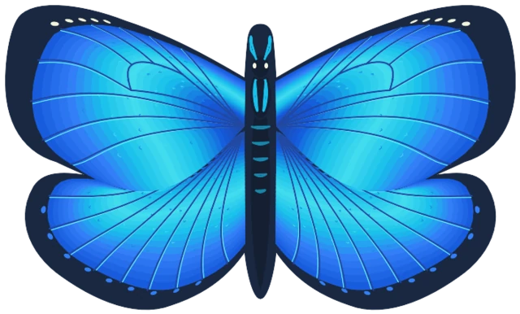

Recortar y plegar
Mariposas
Elige una mariposa real, dale color a las alas y sigue las imágenes. En el mismo taller puedes elegir aletas traseras ajustables o un cuerpo plegado que puedes sujetar para lanzarla.

Taller de vuelo en papel
Un taller gratuito para niños de 5 a 12 años y sus familias. Para un avión o un planeador de anillo basta una hoja. Para la mariposa o la semilla giratoria necesitas una plantilla impresa, tijeras y un clip. Puedes empezar sin registrarte.
Elegir un diseño
La colección
Empieza con lo que tengas a mano. Cada modelo tiene su propia mesa de trabajo.
Recortar y plegar
Elige una mariposa real, dale color a las alas y sigue las imágenes. En el mismo taller puedes elegir aletas traseras ajustables o un cuerpo plegado que puedes sujetar para lanzarla.

Hoja entera · solo pliegues
Basta una hoja de papel. Sigue los pliegues, da forma a las alas y prueba un avión inspirado en la historia de la aviación.

Diseños experimentales
Forma un anillo con una hoja, deja caer una semilla de arce de papel o pliega un planeador con dos pares de alas. ¿Cuál gira al caer?

Para casa o el aula
La página 3 indica dónde encontrar cada modelo. En la página 4 puedes anotar cinco aterrizajes, cambiar un pliegue y probar cinco veces más. Descarga el libro gratis en A4 o Carta.
Ver la página 4 del libro ↗En paralelo
Compara las alas, los materiales y los pliegues de dos modelos. Imprime la ficha y marca dónde toca el suelo cada uno.
En casa o en clase
Escoge un lugar para aterrizar. Haz una predicción. Lanza con suavidad, cambia una sola cosa y vuelve a lanzar desde el mismo sitio.
Descargar la actividad familiar ↗Prueba el anillo, la semilla giratoria o el planeador tándem ↗
Pide ayuda con las tijeras y los pliegues difíciles. Señala dónde crees que aterrizará.
Marca cinco aterrizajes. Cambia una aleta de cola y observa qué ocurre en los cinco siguientes.
Pregunta qué podría enseñaros el siguiente vuelo. Deja que el niño o la niña elija qué cambiar.
Biblioteca abierta
Imprime primero una copia y mide la línea de 50 mm con una regla. Si sale más corta o más larga, elige «Tamaño real» (100 %) al imprimir y repite la prueba antes de sacar copias para toda la clase.
Elige el diseño y el formato que usa tu impresora.
En dos pruebas iniciales con el modelo K1, las alas se doblaron y las mariposas apenas planearon. Prueba la tuya con un clip y marca dónde aterriza.
Laboratorio de motores
Descubre el módulo original que se maneja desde el móvil, explora los componentes de una alternativa abierta e imprime una maqueta para probar el encaje en un avión de papel.